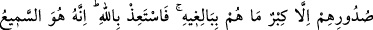
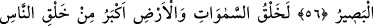
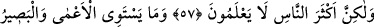
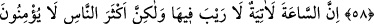
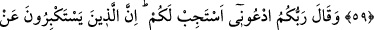
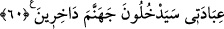

BANA DUA EDİN,
KABUL EDEYİM
56. Kendilerine gelmiş kesin bir delil olmaksızın, Allah’ın âyetleri hakkında
münakaşa edenler var ya, hiç şüphe yok ki, onların kalplerinde, asla
yetişemeyecekleri bir büyüklük hevesinden başka bir şey yoktur. Sen Allah’a sığın.
Kuşkusuz O, işiten ve görendir.
57. Elbette göklerin ve yerin yaratılması, insanların yaratılmasından daha büyük
bir şeydir. Fakat insanların çoğu bilmezler.
58. Körle gören, inanıp iyi amellerde bulunanla kötülük yapan bir olmaz. Ne
kadar az düşünüyorsunuz!
59. Kıyamet günü mutlaka gelecektir, bunda hiç şüphe yoktur. Fakat insanların
çoğu buna inanmazlar.
60. Rabbiniz şöyle buyurdu: Bana duâ edin, kabul edeyim. Çünkü bana ibadeti
bırakıp büyüklük taslayanlar aşağılanarak cehenneme gireceklerdir.
Rivâyet edildiğine göre Mekke kâfirleri Kur’an ve yeniden diriliş hakkında ileri geri
konuşup -biz böyle söylemekten Allah’a sığınırız-: “Bu Kur’an Allah kelâmı değildir.
Yeniden diriliş de imkânsızdır” dediler. Bunun üzerine Hak Teâlâ şu âyeti indirdi:
“Kendilerine” Allah tarafından “gelmiş kesin bir delil,” ezici bir belge “olmaksızın,
Allah’ın âyetleri hakkında münakaşa edenler”, onları ikrara yanaşmayanlar “var
ya…” Allah tarafından bizzat kendi âyetlerini nakzeden bir delilin gelmesi zaten
imkânsızken, tartışmanın böyle bir şeyle kayıtlanması, dînî konularda konuşmak için
kesinlikle âşikâr bir delîle dayanılması gerektiğini bildirmek içindir.
“Hiç şüphe yok ki, onların kalplerinde, asla yetişemeyecekleri bir büyüklük